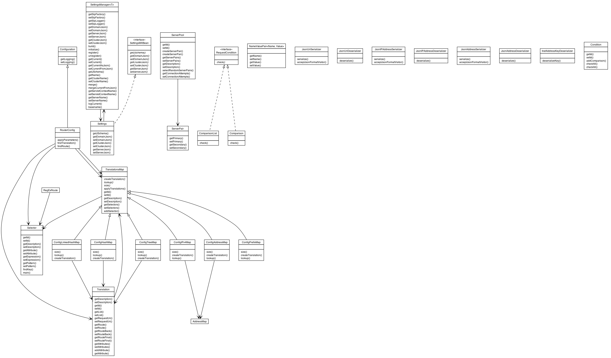

|
||||||||||
| PREV PACKAGE NEXT PACKAGE | FRAMES NO FRAMES | |||||||||

See:
Description
| Interface Summary | |
|---|---|
| RequestCondition | |
| SettingsMXBean | |
| Class Summary | |
|---|---|
| AddressMap | |
| Comparison | |
| ComparisonList | |
| Condition | |
| ConfigAddressMap | |
| ConfigHashMap | |
| ConfigIPv4Map | |
| ConfigLinkedHashMap | |
| ConfigPrefixMap | |
| ConfigTreeMap | |
| Configuration | |
| InetAddressKeyDeserializer | |
| JsonAddressDeserializer | |
| JsonAddressSerializer | |
| JsonIPAddressDeserializer | |
| JsonIPAddressSerializer | |
| JsonUriDeserializer | |
| JsonUriSerializer | |
| NameValuePair<Name,Value> | |
| RegExRoute | |
| RouterConfig | |
| Selector | |
| ServerPair | |
| ServerPool | |
| Settings | |
| SettingsManager<T> | The SettingsManager class automatically reads a JSON formated configuration file. |
| Translation | |
| TranslationsMap | |
Use the SettingsManager Generics class to dynamically read and write configuration files.
|
||||||||||
| PREV PACKAGE NEXT PACKAGE | FRAMES NO FRAMES | |||||||||